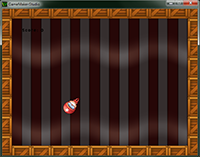

Tutorial
Page 1 of 15
Your First Game
Even though GameMaker is very easy to use, getting the hang of it might be a bit difficult at first, especially if you have had no prior experience of programming. This tutorial is meant for those that
have some difficulty getting started and it will lead you step by step through the process of making your first game.
To make your first game you have to understand a number of the basic aspects of GameMaker, so please read this tutorial carefully and try to follow all the steps correctly. Once you have finished your
first game the second one is going to be a lot easier!

Click on the Next button to go to the next page of the tutorial.